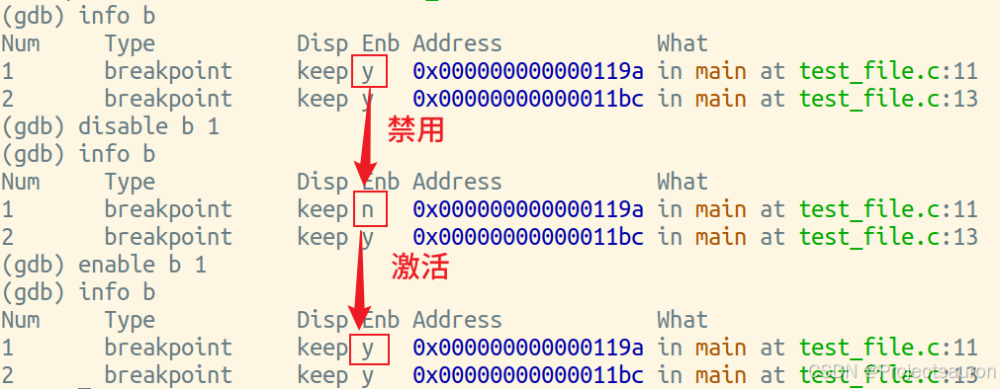

Linux 下 gdb 的使用
[toc]
一、概述
GDB（GNU调试器）是一个功能强大的开源调试工具，可用于调试多种编程语言，包括 C、C ++、Fortran 等。它可以在运行过程中检查程序状态，设置断点以停止程序执行并观察变量值、内存状态等，并提供一系列命令和功能来辅助调试过程。
GDB 的主要功能包括以下几个方面：
- 设置断点：
GDB允许你在程序的某一行代码上设置断点，当程序执行到这一行时会暂停并等待调试命令。 - 单步调试：通过单步调试，你可以逐行执行程序并观察每一行代码的执行情况，方便定位问题。
- 查看变量和内存：在调试过程中，你可以查看各个变量的值，检查它们是否符合预期。同时，你还可以查看内存的内容，以了解程序的内部状态。
- 捕捉错误：
GDB可以帮助你捕捉程序的错误，包括内存访问错误、未处理的异常等。当程序发生错误时，GDB会在错误发生的地方停下来，并提供相关信息。 - 远程调试：在某些情况下，你可能需要在远程机器上进行调试。
GDB支持远程调试，你可以通过网络连接到远程机器，并在该机器上进行调试操作。
更多信息可以查看 GDB 官网。
1、安装和启动 GDB
首先输入命令：gdb -v 查看是否安装过 GDB：
如果没有安装则输入(Ubuntu 下)：
1 | |
然后就可以启动 gdb 进行调试了。通过输入如下命令来启动 gdb 调试，直接指定需要调试的可执行文件名即可：
1 | |
当下方出现图中圈中的字段则表示可调试。而如果出现了下图中的字段则表示无法调试：

使用常规编译生成的可执行文件正常一定会出现 No debugging symbols found in xxx 这个错误。而且即使使用带调试信息 -g 编译时，有时候也会出现这种情况。
解决方法如下：
我们先使用 -c -g 生成带调试信息的只进行过预处理、编译、汇编，但没有被链接的目标文件，再利用目标文件链接、重定位后生成可执行文件，使用这个可执行文件便不会出现问题。
1 | |
如果目标执行文件要求出入参数（如 argv[] 接收参数），则可以通过如下三种方式指定参数：
- 在启动 gdb 时，
gdb --args text_file - 在进入 gdb 之后，运行
set args param_1 - 在进入 gdb 调试以后，
run param_1或者start param_1
其中的 param_1 是你自己要输入的参数。
二、 GDB 常用命令
以下以 test_file.c 作为源程序例子的名字，test_file 作为可执行文件例子的名字, 以 param_1 作为参数的例子的名字。
格式说明：
(gdb) 表示是在 GDB 调试页面输入的命令
p(print)：表示 p 是 print 指令的缩写
1 | |
然后再用上一节提到过的方法生成可执行文件。
1、查看源码
1 | |
输入
l或list即可
如果直接输入 l 则会直接从文件第一行开始打印，一次打印 10 行，直到文件尾：

可以看到，GDB 会自动记忆我们上次敲入的指令。
当然，如果想看指定行的代码，则在 l 后面加上一个行号即可：
同理，如果想看指定函数的代码，则在 l 的后面加上指定的函数名即可：

2、断点
2.1 设置断点
- break + [源代码行号][源代码函数名][内存地址]
- break … if condition
- …可以是上述任一参数；condition 是条件。例如在循环体中可以设置
break ... if i = 100来设置循环次数
- …可以是上述任一参数；condition 是条件。例如在循环体中可以设置
- tbreak：tbreak 命令可以看到是 break 命令的另一个版本，tbreak 和 break 命令的用法和功能都非常相似，唯一的不同在于，使用 tbreak 命令打的断点仅会作用 1 次，即使程序暂停之后，该断点就会自动消失。
- rbreak：和 break 和 tbreak 命令不同，rbreak 命令的作用对象是 C、C++ 程序中的函数，它会在指定函数的开头位置打断点。
2.2 查看断点信息
1 | |
若是直接执行 info 的话，出来的就是所有的调试信息：
但若是我们只想查看一下所打的断点的信息，那就在后面加个 b/breakpoint：
六个字段的含义如下：
- Num ： 编号
- Type ： 类型
- Disp ： 状态
- Enb ： 是否可用
- Address ： 地址
- What ： 在此文件的哪个函数的第几行
2.3 删除断点
1 | |
参数 location 通常为某一行代码的行号或者某个具体的函数名。当 location 参数为某个函数的函数名时，表示删除位于该函数入口处的所有断点。
1 | |
输入 breakpoints 参数表示删除所有断点；num 参数为指定断点的编号，表示删除指定编号的断点。


2.4 激活/禁用断点
1 | |

1 | |
2.5 观察断点
watch：此命令打的是观察断点，可以监控某个变量或者表达式的值。只有当被监控变量（表达式）的值发生改变，程序才会停止运行。
1 | |
cond 代表的就是要监控的变量或者表达式。
rwatch 命令：只要程序中出现读取目标变量（表达式）的值的操作，程序就会停止运行；
awatch 命令：只要程序中出现读取目标变量（表达式）的值或者改变值的操作，程序就会停止运行。
catch：捕捉断点的作用是，监控程序中某一事件的发生，例如程序发生某种异常时、某一动态库被加载时等等，一旦目标时间发生，则程序停止执行。
总结：
观察断点：watch+ [变量][表达式] ：当变量或表达式值改变时即停住程序。rwatch+ [变量][表达式] ：当变量或表达式被读时，停住程序。awatch+ [变量][表达式]：当变量或表达式被读或被写时，停住程序。
设置捕捉点：catch+event：当 event 发生时，停住程序。
其中，catch 指令的参数 event 参数表示要监控的具体事件。常用的 event 事件类型如下表所示：
| event 事件 | 含义 |
|---|---|
| throw [exception] | 当程序中抛出 exception 指定类型异常时，程序停止执行。 如果不指定异常类型（即省略 exception），则表示只要程序发生异常，程序就停止执行。 |
| catch [exception] | 当程序中捕获到 exception 异常时，程序停止执行。 exception 参数也可以省略，表示无论程序中捕获到哪种异常，程序都暂停执行。 |
| load [regxep] unload [regexp] |
其中，regexp 表示目标动态库的名称， load 命令表示当 regexp 动态库加载时程序停止执行； unload 命令表示当 regexp 动态库被卸载时，程序暂停执行。 regexp 参数也可以省略，此时只要程序中某一动态库被加载或卸载，程序就会暂停执行。 |
除此之外，还有几个比较特殊的 event：
- exec：调用系统调用 exec 时。（exec 为关键字，目前此功能只在 HP-UX 下有用）
- fork：调用系统调用 fork 时。（fork 为关键字，目前此功能只在 HP-UX 下有用）
- vfork：调用系统调用 vfork 时。（vfork 为关键字，目前此功能只在 HP-UX 下有用）
2.6 捕获信号
1 | |
- signals：是 Linux/Unix 定义的信号，
SIGINT表示中断字符信号，也就是Ctrl+C的信号，SIGBUS表示硬件故障的信号；SIGCHLD表示子进程状态改变信号；SIGKILL表示终止程序运行的信号...... - argu：
- nostop：当被调试的程序收到信号时，GDB 不会停住程序的运行，但会打出消息告诉你收到这种信号。
- stop：当被调试的程序收到信号时，GDB 会停住你的程序。
- print：当被调试的程序收到信号时，GDB 会显示出一条信息。
- noprint：当被调试的程序收到信号时，GDB 不会告诉你收到信号的信息。
- pass or noignore：当被调试的程序收到信号时，GDB 不处理信号。这表示，GDB 会把这个信号交给被调试程序会处理。
- nopass or ignore：当被调试的程序收到信号时，GDB 不会让被调试程序来处理这个信号。
2.7 线程中断
1 | |
- linespec：断点设置所在的源代码的行号。如:
test.c:12表示文件为 test.c 中的第 12 行设置一个断点。 - threadno：线程的 ID。是 GDB 分配的，通过输入
info threads来查看正在运行中程序的线程信息。 - **if …**：设置中断条件。
3、查看信息
3.1 查看数据
1 | |
可以通过添加参数来设置输出格式：
- / ：按十六进制格式显示变量。
- /d ：按十进制格式显示变量。
- /u ：按十六进制格式显示无符号整型。
- /o ：按八进制格式显示变量。
- /t ：按二进制格式显示变量。
- /a ：按十六进制格式显示变量。
- /c ：按字符格式显示变量。
- /f ：按浮点数格式显示变量。
但是一个一个地去 print 太过于繁琐，于是可以用 display！
display：跟踪查看一个变量，每次停下来都显示它的值（变量/结构体…）
同理，也可以用来追踪地址信息：
如果不想追踪某个变量了，就可以用 undisplay 指令取消对该变量的追踪：
1 | |
3.2 查看内存
1 | |
- n 表示显示内存长度
- f 表示输出格式（见 print）
- u 表示字节数制定（b 单字节；h 双字节；w 四字节；g 八字节；默认为四字节）

3.3 查看栈信息
1 | |
- -full 打印栈帧信息的同时，打印出局部变量的值。
- n 表示只打印栈顶上 n 层的栈信息。
- -n 表示只打印栈底上 n 层的栈信息。
- 不加参数，表示打印所有栈信息。
3.4 查看栈帧信息
1 | |
该命令会依次打印出当前栈帧的如下信息：
- 当前栈帧的编号，以及栈帧的地址；
- 当前栈帧对应函数的存储地址，以及该函数被调用时的代码存储的地址
- 当前函数的调用者，对应的栈帧的地址；
- 编写此栈帧所用的编程语言；
- 函数参数的存储地址以及值；
- 函数中局部变量的存储地址；
- 栈帧中存储的寄存器变量，例如指令寄存器（64 位环境中用 rip 表示，32 为环境中用 eip 表示）、堆栈基指针寄存器（64 位环境用 rbp 表示，32 位环境用 ebp 表示）等。
除此之外，还可以使用
info args命令查看当前函数各个参数的值；使用info locals命令查看当前函数中各局部变量的值。

4、运行、调试
1 | |
运行代码。如果有断点，会在断点处停下；否则会直接运行到程序结束。
1 | |
程序在断点处停下来，通过 continue 指令让程序继续执行到下一个断点，没有断点的话则直接运行到程序结束。
1 | |
参数 n 表示单步执行多少行代码，默认为 1 行。其最大的特点是当遇到包含调用函数的语句时，无论函数内部包含多少行代码，next 指令都会一步执行完。也就是说，==对于调用的函数来说，next 命令只会将其视作一行代码==。
1 | |
参数 n 表示一次执行的行数，默认为 1 行。通常情况下，step 命令和 next 命令的功能相同，都是单步执行程序。不同之处在于，当 step 命令所执行的代码行中包含函数时，==会进入该函数内部==。


1 | |
- 不带参数的 until 命令，可以使 GDB 调试器快速运行完当前的循环体，并运行至循环体外停止。注意，until 命令并非任何情况下都会发挥这个作用，只有当执行至循环体尾部（最后一行代码）时，until 命令才会发生此作用；反之，until 命令和 next 命令的功能一样，只是单步执行程序
(gdb) until location：参数 location 为某一行代码的行号
下面的例子紧接着上面 step 指令的例子：
1 | |
通过 finish 函数，可以直接让一个函数执行完毕，直接回到了调用函数的位置。
该例和 until 类似：

5、编辑和搜索
1 | |
location 表示程序中的位置。这个命令表示激活文件的指定位置，然后进行编辑。
输入以下两种格式都可以：
1 | |
第一项命令格式表示从当前行的开始向前搜索，后一项表示从当前行开始向后搜索。
其中 regexp 就是正则表达式，正则表达式描述了一种字符串匹配的模式，可以用来检查一个串中是否含有某种子串、将匹配的子串替换或者从某个串中取出符合某个条件的子串。